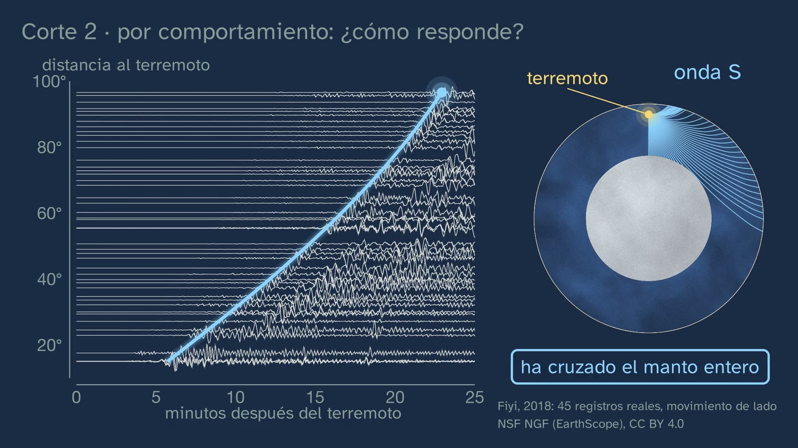

Dos maneras de cortar la Tierra
En pocas palabras
Es la clase que cierra el tema, y lo hace con la pregunta que dibuja mucha gente: ¿hay un mar de lava bajo tus pies? Parte de la erupción de La Palma de 2021 y contesta con los datos que el alumnado ya sabe leer: los registros del terremoto de Fiyi de la clase 3, mirados ahora en el movimiento de lado, donde la onda S llega con claridad hasta casi 100°. Una S no cruza un líquido. Así que el manto es roca sólida, aunque muchos dibujos lo pinten de naranja.
Para ordenarlo, la Tierra se corta de dos maneras, con dos preguntas. De qué está hecha: bajando con la densidad del PREM, los saltos dicen dónde cambia el material: corteza, manto y núcleo, y las dos cortezas. Cómo se comporta: bajando con la velocidad de la S: litosfera, astenosfera, el resto del manto, núcleo externo líquido y núcleo interno sólido.
Después vienen dos preguntas que el libro suele resolver con una frase. ¿Cómo puede fluir un sólido? La clase da la prueba: la plomada del Himalaya, las raíces de Airy y la isostasia; la raya que Celsius mandó grabar en 1731 en una roca del Báltico, hoy a casi dos metros sobre el agua; la subida de Escandinavia, y la viscosidad que Haskell calculó con ella. La respuesta es que depende de cuánto dure el empuje: un bloque calculado con un cuerpo de Maxwell vuelve entero si se empuja un segundo y se queda deformado si se empuja cien mil años. ¿Por qué el centro, lo más caliente, es sólido? Una sola gráfica, la temperatura real frente a la temperatura de fusión de la superficie al centro, ordena qué capa es sólida y cuál líquida, por qué la astenosfera es blanda, cómo nace el magma, por qué es líquido el núcleo externo y por qué la presión hace sólido el centro.
La clase acaba poniendo los dos cortes en un mismo radio, donde se ve que el Moho cae dentro de la litosfera, con la dinámica del planeta y con la cuenta de todo el tema: lo que da confianza no es una medida, son caminos independientes que encajan en una sola Tierra.
Objetivo. Al terminar, el alumnado sabrá comparar el modelo de capas por composición con el modelo por comportamiento, explicar que el manto es sólido aunque fluya y por qué el núcleo interno es sólido aunque esté tan caliente, y relacionar la estructura con la dinámica del planeta.
Lo que esta ficha añade:
- los matices que la voz no dice: cómo se ha hecho la gráfica de las dos líneas y cuánto hay de estimación en ella, qué es de verdad la astenosfera, por qué en la pizarra no hay una frontera nítida a 100 km, quién grabó la raya y qué midió Lyell, y por qué lo de Repetti no es lo que dicen algunos libros;
- los errores que conviene esperar;
- las soluciones de todo;
- una actividad de unos 15 minutos que no trae ningún libro: la cuenta de Haskell con calculadora, en la que el alumnado prueba tres viscosidades y descubre cuál es la que hace subir Escandinavia lo que ha subido, y, si hay tiempo, dibuja a mano las dos líneas;
- recursos abiertos para seguir.
Currículo
Real Decreto 243/2022, Biología, Geología y Ciencias Ambientales, texto consolidado del BOE (copia del laboratorio, comprobada para la ficha del tema). Los minutos son los del vídeo.
| Elemento | Qué dice el decreto | Dónde se trabaja |
|---|---|---|
| Saber básico, bloque D | «Estructura, composición y dinámica de la geosfera. Métodos de estudio directos e indirectos.» | Toda la clase: la composición (2:53), el comportamiento (6:06), los dos modelos (19:38) y la dinámica (21:31) |
| Saber básico, bloque A | «Hipótesis, preguntas, problemas y conjeturas: planteamiento con perspectiva científica.» | ¿Baja el mar o sube la tierra? (9:11); la apuesta del mar de lava (2:05) |
| Saber básico, bloque A | «La evolución histórica del saber científico: la ciencia como labor colectiva, interdisciplinar y en continua construcción.» | De Pratt a Haskell (7:47) a (10:53); Celsius se equivocó y su raya sirvió (9:49) |
| Competencia específica 1 | «Interpretar y transmitir información y datos científicos, argumentando sobre estos con precisión y utilizando diferentes formatos…» | La sección real (5:16), las curvas del PREM (2:53) y (6:06) y las dos líneas (15:08) |
| Competencia específica 3 | «Diseñar, planear y desarrollar proyectos de investigación siguiendo los pasos de las metodologías científicas…» | Plantear cómo distinguir dos explicaciones (9:11) |
| Competencia específica 4 | «Buscar y utilizar estrategias en la resolución de problemas analizando críticamente las soluciones y respuestas halladas y reformulando el procedimiento si fuera necesario…» | Leer la gráfica para explicar cada capa (16:03) a (18:14); la cuenta del modelo (21:55) |
| Criterio 1.1 | «Analizar críticamente conceptos y procesos relacionados con los saberes de la materia, interpretando información en diferentes formatos (modelos, gráficos, tablas, diagramas, fórmulas, esquemas...).» | Las gráficas de (2:53), (6:06) y (15:08), y la ecuación de (12:54) |
| Criterio 3.1 | «Plantear preguntas, realizar predicciones y formular hipótesis que puedan ser respondidas o contrastadas, utilizando métodos científicos…» | Las apuestas de (2:05) y (9:11) |
| Criterio 4.1 | «Resolver problemas o dar explicación a procesos biológicos, geológicos o ambientales, utilizando recursos variados como conocimientos propios, datos e información recabados, razonamiento lógico…» | Las dos líneas (16:03) a (18:14) y la actividad de esta ficha |
| Criterio 4.2 | «Analizar críticamente la solución a un problema sobre fenómenos biológicos, geológicos o ambientales y modificar los procedimientos utilizados o las conclusiones obtenidas si dicha solución no fuese viable o ante nuevos datos aportados o recabados con posterioridad.» | Lyell corrige a Celsius (9:49); el hielo, explicación nueva (10:19) |
Lo que añade la actividad de esta ficha. El criterio 3.4, «Interpretar y analizar resultados obtenidos en un proyecto de investigación, utilizando, cuando sea necesario, herramientas matemáticas y tecnológicas, reconociendo su alcance y limitaciones…»: el alumnado calcula un modelo, lo compara con lo medido y dice en qué se queda corto.
Cómo está construida la clase
Capítulos del vídeo
Unos veinticinco minutos, en catorce capítulos. Es una clase de teoría: Nil está en su mesa, sin bata. Sale a cámara cuatro veces: al saludar (0:00), con el gancho (1:57), a mitad (7:38) y al despedirse (24:38).
| Parte | Qué pasa | Para qué |
|---|---|---|
| Lo que ya sabes (0:14) | ¿Qué ondas no pueden cruzar un líquido? Las rejillas de la clase 4. | Traer la herramienta con la que se contesta a la pregunta de hoy. |
| Las soluciones (0:38) | Las tres de la clase 4, con su enunciado: el hierro líquido es denso y sólo se resiste a que lo aprieten; el rayo se aleja al pasar a una roca más rápida; los cuatro descubrimientos, en su fecha. | Cerrar lo pendiente sin alargarlo. |
| ¿Un mar de lava? (1:57) | La Palma, 2021. ¿De dónde salía tanta lava? La apuesta: mar de lava o roca sólida. La Tierra se parte en dos preguntas (2:33). | Un gancho con su contexto y cercano, que se contesta dos veces en la clase. |
| De qué está hecha (2:53) | Bajando con la densidad: el Moho, los dos saltitos del manto y el gran salto del núcleo. Las dos cortezas, a escala (3:59). El Moho bajo la península (4:47). | El primer corte, leído en los datos: un salto grande es un material nuevo. |
| Cómo se comporta (5:01) | Rígido, blando, líquido. La S real cruza el manto entero (5:16). Tachado: el mar de lava (5:46). Bajando con la S: las cinco zonas (6:06). Cómo se sabe lo del núcleo interno (7:04). | Contestar a la apuesta con la prueba, y leer el segundo corte. |
| Una balsa de roca (7:47) | La plomada del Himalaya, las raíces de Airy, la isostasia y la pregunta: ¿cómo se flota sobre roca sólida? | La primera pista de que el manto cede, y la respuesta a por qué se hunde el Moho. |
| La raya de Celsius (9:11) | ¿Baja el mar o sube la tierra? Lyell lo comprueba. El hielo (10:19). La simulación. La viscosidad de Haskell (10:53). | La prueba de que el manto fluye, con una historia que nadie cuenta. |
| El mismo manto, dos empujes (11:42) | Hielo y brea. El bloque y el mando de duración (12:23). El tiempo de Maxwell, leído (12:54). Los huecos del cristal (14:08). | Resolver la paradoja «sólido que fluye» con un mecanismo. |
| Las dos líneas (14:43) | Para y piensa. La gráfica (15:08) y su regla (16:03). La astenosfera (16:21), el magma (16:52), el núcleo externo (17:33) y el centro (18:14). Con honestidad: de dónde sale cada línea (18:48). | Una sola gráfica para explicar todo lo anterior, y el error del núcleo interno, desmontado. |
| Los dos cortes, juntos (19:38) | En un mismo radio: el Moho cae dentro de la litosfera. El núcleo, una pieza o dos capas (20:14). Los nombres de cada libro (20:54). | El objetivo de la clase. |
| Una Tierra que se mueve (21:31) | El calor, el flujo, las placas y el campo magnético. | La dinámica del saber, y el puente al tema 2. |
| ¿Cómo lo sabemos? (21:55) | La masa, el momento de inercia, con honestidad, y las cinco clases en un solo corte. | La idea de todo el tema. |
| Para practicar y seguir pensando (22:57) | Recapitular, tres ejercicios (23:26), la pregunta abierta (24:09) y el tema siguiente (24:28). | Las soluciones abren el tema 2. |


Puentes con otras materias. Física y Química: la presión, los cambios de estado y la densidad; y «como el hielo con sal», la bajada del punto de fusión de una mezcla. Física de 2.º: la elasticidad y las ondas. Matemáticas I: las escalas logarítmicas (el mando de duración) y la función exponencial de la actividad, que recoge lo visto en Matemáticas 5.
Lo que hay que traer
- De la ESO (Real Decreto 217/2022): la estructura básica de la geosfera (1.º a 3.º) y, en 4.º, que es de opción, sus métodos de estudio y la tectónica. No todo el alumnado llega igual: en Castilla y León, la ESO ya enseña los modelos geoquímico y geodinámico; por eso la clase no los da por nuevos y los construye desde las pruebas.
- De las clases 1 a 4: la densidad y su medida (1), la peridotita, la ringwoodita del diamante y el gradiente del calor (2), los registros de Fiyi y las ondas P y S (3), que la S no cruza un líquido y las fronteras con su nombre (4).
- De Física y Química: presión, temperatura y cambios de estado.
- Para la actividad: potencias de diez en la calculadora y la función exponencial.
Plan de una sesión de 50 minutos
Pensado para usar el vídeo por partes y dejar sitio a la actividad.
| Minutos | Qué se hace |
|---|---|
| 0–3 | Sin vídeo, con la hoja: «Antes de ver el vídeo». Cada cual dibuja la Tierra por dentro y colorea el manto. Se guardan los dibujos. |
| 3–12 | Vídeo de 0:04 a 7:38 (si las soluciones de la clase 4 ya se corrigieron, desde (1:57)). En la apuesta (2:05), a mano alzada: ¿mar de lava o roca sólida? |
| 12–19 | Vídeo de 7:47 a 11:42. En 9:11, parar: ¿cómo distinguiríais que baja el mar de que sube la tierra? |
| 19–29 | Vídeo de 11:42 a 19:38. Parar en 14:43 y dejar un minuto. |
| 29–45 | La actividad, en parejas (véase más abajo). |
| 45–50 | Vídeo de 19:38 a 20:54. Cada cual recupera su dibujo del principio y escribe qué cambiaría. |
Si hay poco tiempo, el vídeo entero en clase, con sus paradas, y la actividad para casa. Si sólo hay un rato, las partes que mejor funcionan sueltas son «La raya de Celsius» ((9:11) a (10:53)) y «Las dos líneas» ((14:43) a (18:48)).
Notas para el profesorado
Los dos cortes y sus nombres. La voz dice «por composición» y «por comportamiento». En los libros y currículos salen como modelo geoquímico o estático, y geodinámico, dinámico o mecánico (Comunitat Valenciana: «modelo geoquímico y dinámico»; Madrid: «composición» y «mecánica»; Galicia: «composición» y «comportamento»; Bruño: «estático» y «dinámico»; SM: «unidades geoquímicas» y «dinámicas»). Lo que aquí es «el resto del manto» es la mesosfera de muchos materiales, y el núcleo, la endosfera. La clase evita «manto» a secas en el segundo corte: la astenosfera también es manto.
Sobre «discontinuidad de Repetti». Varios manuales de la península llaman así a la de unos 660 km, entre manto superior e inferior. Lo que estudió William Repetti (tesis en Saint Louis, hacia 1928–1930) estaba hacia los 900–970 km (Anderson, AGU 2002; Bolt y otros, 1968), y la literatura internacional dice, sin más, «discontinuidad de 660 km». Por eso la voz no usa el nombre y va en la descripción. Si tu libro lo trae, conviene decirlo. Algún material lo explica además como un cambio químico: lo aceptado a 660 km es un cambio de fase (ringwoodita a bridgmanita y ferropericlasa), aunque sigue habiendo debate.
La astenosfera, a qué llamamos así. Es una definición mecánica: la parte del manto, bajo la litosfera, que cede. Fernández, Alonso Chaves y Anguita (2013) escriben que «no tiene, por tanto, nada que ver con la definición sísmica ni con la presencia o ausencia de un pequeño porcentaje de fundido», y dan un espesor de 400 a más de 600 km. Por eso la voz no le pone frontera nítida y por eso la pizarra la hace llegar a unos 410 km, sólo para dibujar. Hay tres cosas que conviene no confundir:
- La zona de baja velocidad. En el PREM isótropo, la S frena sin saltos desde el Moho hasta los 220 km, un 1,6 %. La voz dice «un dos por ciento». No marca la astenosfera: es una señal sísmica, de otra escala de tiempo.
- Lo fundido. Se discute. Bajo los continentes apenas hay; donde lo hay, es muy poco: del 0,1 al 0,3 %, con estimaciones de hasta el 1 % (Debayle y otros, 2020; Chantel y otros, 2016). Hirschmann (2010) sostiene que con el agua y el CO₂ normales es estable algo de fundido en toda la zona. Lo seguro es lo que dice la voz: sólida casi entera, y blanda porque está cerca de fundir.
- La base de la litosfera. Unos 1300 °C es un convenio. Su grosor va de casi nada en las dorsales a unos 100 km bajo los océanos viejos, y de unos 40 a más de 200 km bajo los continentes. Por eso el ejercicio 1 dice «a ciento cincuenta bajo un océano».
La sección de la onda S (5:16). Son 45 de los 96 registros de Fiyi de la clase 3, los que tienen S directa, de 15° a 97°, ahora en la componente transversal (lo que se mueve de lado respecto a la línea del terremoto a la estación) y filtrados entre 0,02 y 0,1 Hz. Más allá de los 97° la señal sigue, y por eso la pizarra se corta ahí: es la S difractada, que roza el borde del núcleo y se dobla por él, tan clara que un alumno la confundiría con la S directa. El programa, seccion_s.py, está en la carpeta de materiales de la clase y sirve con cualquier gran terremoto profundo. Antes de la S ya hay movimiento: por eso la voz dice «el primer gran golpe», y no «cuando empieza a moverse».
La raya de 1731. La talló Johan Rudman, maestro de matemáticas, siguiendo las instrucciones de Celsius: la voz dice «manda grabar» (Ekman, 2016, p. 100; Lyell, 1835, escribió mal el nombre, «Rudberg»). Es una línea horizontal con «1731» encima, en la roca de focas de Lövgrund, cerca de Gävle, y se ve en la foto de la pizarra. La ficha sueca de esa foto dice 1732, y en la roca se lee 1731: la fecha de Ekman y de la Universidad de Uppsala es 1731. La velocidad de 1743 (unos 1,4 cm al año) no salió de esa raya, sino de otra piedra, la de Iggön. Linneo apoyó que bajaba el agua. Playfair (1802) ya argumentó que el agua no puede bajar sólo en un sitio, y von Buch (1807) anunció que subía Suecia; Lyell, escéptico, fue a medirlo en 1834 y encontró ritmos distintos según el lugar. Hoy se ven tres marcas, de 1731, 1831 y 1931, y en 2031 cabrá otra (Ekman, 2016, p. 101).
Haskell. No midió la viscosidad: la calculó en 1935 ajustando un modelo muy sencillo, un semiespacio viscoso de una sola viscosidad, a curvas de levantamiento ya publicadas. Mitrovica (1996) matiza a qué parte del manto corresponde ese valor: una media hasta unos 1200 o 1400 km. La viscosidad crece hacia abajo. La simulación de la pizarra es ese mismo modelo con cifras redondas, y no pretende ser Escandinavia.
El tiempo de Maxwell (12:54). τ = η/μ. Con η = 10²¹ Pa·s, sale de unos 480 años con la rigidez de la astenosfera (66 GPa) a unos 110 con la de la base del manto (294 GPa). De ahí «unos cientos de años». Dos precauciones:
- El flujo no empieza a los trescientos años. En un cuerpo de Maxwell empieza en el instante cero: τ es cuando lo que ha fluido iguala a lo elástico. El bloque de la pizarra lo calcula así, con τ = 300 años; las deformaciones muy grandes están comprimidas, y se dice.
- No es lo que tarda Escandinavia. La recuperación de un casquete de miles de kilómetros tarda miles de años, unos 4400 (véase la actividad), porque es otro problema: recolocar un planeta.
Cómo fluye un sólido (14:08). La pizarra enseña las vacantes. También fluye por dislocaciones, defectos lineales; Karato y Wu (1993) dicen que el manto superior caliente fluye sobre todo por dislocaciones. La voz lo recoge en «otros defectos». Los libros lo llaman a veces reptación o fluencia. El hielo y el manto fluyen por el mismo tipo de mecanismo, cristales que se deforman por defectos, no por el mismo exactamente. Las ondas S cruzan el hielo glaciar a unos 1800 m/s.
La brea (11:42). La foto es la de Dublín, y lo que se cuenta es de Queensland: se rotula. La brea se vertió en 1927 y el tallo del embudo se cortó en 1930. Las nueve gotas cayeron en 1938, 1947, 1954, 1962, 1970, 1979, 1988, 2000 y 2014. A fecha de esta ficha, ninguna fuente dice que haya caído la décima: tiene su cámara en directo. Es un líquido muy viscoso, no un sólido: engaña al revés que el manto.
Las dos líneas, cómo están hechas (15:08). Son la pieza más importante de la clase y también la más estimada. Conviene saber de dónde sale cada tramo (el dosier, datos.md, y temperaturas.py están en los materiales):
- La temperatura real. Del suelo a 100 km, conducción (unos 1350 °C a 100 km, entre el convenio de 1300 y los 1399 de la adiabata). De 100 a 2690 km, la adiabata de Katsura (2022), anclada en los cambios de fase, con un margen de unos ±40 °C. La capa límite de la base del manto, unos 200 km, según Lay y otros (2008). En el núcleo, una adiabata calculada a partir de una temperatura de unos 5500 K en el borde del núcleo interno.
- La de fusión. La roca, seca: Hirschmann (2000), Herzberg y otros (2000) y la media de Fiquet y otros (2010) y Andrault y otros (2011). Es el solidus, donde empieza a fundirse: por eso la voz dice «empieza a fundirse». La aleación del núcleo: una recta local de 9 K/GPa (Labrosse, 2014) desde el borde del núcleo interno, una cuenta nuestra sólo para dibujar. Bajo esa línea el líquido del núcleo empieza a solidificar: es el liquidus.
- El cruce a 5150 km no es un resultado. Está puesto: las ondas dicen dónde empieza el sólido, y ahí la temperatura real tiene que ser la de fusión. Así se estima la temperatura de esa frontera (Labrosse, 2014; Mita y otros, 2024). La voz lo dice.
- Los números se discuten. En el borde núcleo-manto, 3300–4300 K (Lay y otros, 2008). El hierro puro a 330 GPa, de unos 5500 a 6350 K según el método. Nomura y otros (2014) y Kim y otros (2020) bajan la fusión de la roca en el borde del núcleo a 3160–3300 °C, lo que chocaría con Fiquet y obligaría a más hidrógeno en el núcleo. Por eso la pizarra no da cifras en esa zona y la voz dice «cae de golpe», sin los 400 °C del dibujo.
- Las capas no se discuten: las ondas dicen qué es sólido y qué es líquido.
Las celdas de yunque de diamante llegan a unos 200 GPa, un poco más de dos millones de atmósferas (Anzellini y otros, 2013). Con choques se ha llegado más lejos.
El magma (16:52). La voz da dos causas generales: la roca que sube y el agua. No dice cuál fue la de La Palma: Canarias es un punto caliente, y eso es del tema 2. Lo que se mide es dónde estaba guardado: de unos 15 a 27 km según las inclusiones (Dayton y otros, 2023), con almacenes a 9–13, 18–32 y 33–38 km según la sismicidad (Del Fresno y otros, 2023). Dónde se fundió no lo dice ninguno de esos datos. Y «no viene del núcleo» es exacto, pero no hay que irse al otro extremo: hay trabajos que unen el manto bajo Canarias con una estructura profunda (Civiero y otros, 2021), y se discute.
El núcleo no es hierro puro. Pesa de un 5 a un 10 % menos de lo que pesaría el hierro puro a esa presión (Birch, 1952; Hirose, Wood y Vočadlo, 2021). Ese porcentaje es el déficit de densidad, no la cantidad de elementos ligeros, y aún se discute cuáles son. El hierro puro fundiría a unos 4030 °C en el borde del núcleo, casi como la roca: la que cae es la curva de la aleación. La comparación con el hielo y la sal es sólo eso, una comparación: una mezcla funde a menos temperatura que sus componentes puros.
El salto de densidad en el núcleo interno (7:04). Es de 12,2 a 12,8 g/cm³, un 4,9 %. Parte es por congelar y la mayor parte, porque el sólido lleva menos elementos ligeros: por eso «casi el mismo material».
La S en el núcleo interno. Lo rígido se sabe por las vibraciones de la Tierra entera (Dziewonski y Gilbert, 1971). Se han propuesto ondas PKJKP, una P que se convierte en S dentro del núcleo interno; siguen en discusión (Deuss y otros, 2000; Wookey y Helffrich, 2008; Shearer, Rychert y Liu, 2011).
El momento de inercia (21:55). Dice cómo está repartida la masa alrededor del eje: se expresa como I/(M·R²), que vale 0,4 en una bola uniforme y 1 si toda la masa estuviera en un aro. La Tierra tiene 0,3307 (IERS 2010). El modelo se ajustó a eso y a la masa, y la voz lo avisa.
La línea inclinada de la S (6:06). Entre los 24 y los 220 km, la velocidad del modelo PREM baja de 4,49 a 4,42 km/s, un 1,6 %, que la voz redondea a un dos por ciento. Es la línea que se inclina a la izquierda, y se resalta en amarillo: inclinarse a la izquierda es ir más despacio. El escalón de los 220 km que sigue es el del modelo, que lo trae en su tabla.
El escalón de los 220 km (2:53). En la gráfica de densidad hay un escalón pequeño a 220 km, de 3,36 a 3,44 g/cm³, que la voz no cuenta y que va rotulado en gris. Es del modelo: el PREM lo pone en toda la Tierra, pero en la realidad es local e intermitente, y bajo los continentes se detecta más del doble de veces que bajo los océanos (Gu, Dziewonski y Ekström, Geophysical Research Letters, 2001). Si alguien pregunta, sirve para enseñar que un modelo medio no es la Tierra. Ojo con el nombre: a veces se le llama también discontinuidad de Lehmann, pero en esta clase ese nombre es sólo la frontera del núcleo interno.
Lo pintado (2:33). Antes de contestar, cada cara del globo dibuja sus zonas en gris: dónde están, no de qué son, para no adelantar la apuesta. El mar de lava de la opción falsa y el núcleo externo no llevan la misma pintura: la lava tiene costra oscura, y el núcleo es hierro fundido, más dorado. El globo usa la textura Blue Marble de la NASA, de dominio público. Las capas van a escala, con los radios del PREM, pero la textura de la roca y de la lava es ilustración, no dato: dice qué es sólido y qué es líquido, nada más. Por eso el manto va azul: pintarlo de naranja sería el error que la clase combate. Conviene decirlo si alguien pregunta si el interior «se ve así».
Las dos bolas (21:55). Con la misma masa, el mismo radio y el mismo empujón, gira más deprisa la que tiene la masa más cerca del centro. En la pizarra, en la proporción real: 0,40 / 0,33, unas 1,2 veces más.
La herrería (16:21). El hierro puro funde a 1538 °C. Se forja, según la pieza, entre unos 950 y 1250 °C. Es un sólido cristalino de verdad, y por eso sirve donde no sirve el chocolate templado, que se dobla porque parte de su grasa ya se ha fundido.
Errores típicos y cómo se tratan
Los dos primeros están documentados (King, 2000; McAllister, 2014; Clark y Libarkin, 2008), aunque no en alumnado español de Bachillerato. Los demás los prevé la ficha del tema.
- «Bajo la corteza hay un mar de lava.» Es la apuesta (2:05) y lo tacha la pizarra (5:46). Si alguien pregunta por los volcanes, la respuesta está en (16:52). Conviene sacar el dibujo del libro si lo pinta de naranja: es un color, no un dato.
- «El núcleo interno es líquido porque está muy caliente.» Lo plantea (14:43) y lo desmonta (18:14). Pedir que lo expliquen con la gráfica, no con la frase.
- «El magma viene del núcleo.» (16:52).
- «Un sólido no se puede mover», o «si fluye, es líquido». Es la idea que resuelven (12:23) y (12:54). Si alguien dice que el manto es «como plastilina», hay que pedirle el mecanismo.
- «La litosfera y la corteza son lo mismo.» (19:38): el Moho cae dentro de la litosfera. El ejercicio 1 lo pone a prueba.
- «La astenosfera es una capa de magma.» (16:21): sólida, y blanda porque está cerca de fundir.
- «Si dos modelos no coinciden, uno está mal.» (19:38), y la pregunta abierta (24:09).
- «El mar bajó en Suecia.» Es el error de Celsius, y es razonable (9:11). Ayuda preguntar qué debería verse en otro mar.
- «Los números de la gráfica son medidas.» (18:48).
Preguntas y soluciones
Dentro del vídeo
- ¿Qué ondas de un terremoto no pueden cruzar un líquido? (0:14). Las S. Sacuden de lado, y un líquido no tira para recuperar su forma.
- Bajo tus pies, ¿hay un mar de lava, o hay roca sólida? (2:05); la pausa, con contador. Roca sólida. Lo que saldrá: «mar de lava», sobre todo con el dibujo de la ESO en la cabeza. Criterio: no importa acertar; importa que luego se diga qué dato lo decide.
- ¿Cómo distinguirías si baja el mar o sube la tierra? (9:11); la pausa, con contador. Midiendo en varios sitios a la vez: el mar es uno solo y, si bajara, bajaría lo mismo en todas partes. Si cada costa cambia a su ritmo, se mueve la tierra. Es el argumento de Playfair (1802). Lo que saldrá: «midiendo mejor».
- ¿Cómo puede ser que lo más caliente sea sólido y lo de fuera, líquido? (14:43); la pausa, con contador. Lo decide la presión, que sube la temperatura de fusión más deprisa que la temperatura real. Lo que saldrá: «porque el centro es de otro material» (casi el mismo), o «porque está más frío» (no lo está).
Para practicar (las soluciones abren el tema 2)
- En qué capa estás, con los dos cortes, a 20 km bajo un continente, a 150 km bajo un océano, a 3000 km y a 6000 km. A 20 km, corteza (continental) y litosfera. A 150 km bajo un océano, manto y astenosfera. A 3000 km, núcleo y núcleo externo. A 6000 km, núcleo y núcleo interno. Criterio: dos respuestas por profundidad. Lo que saldrá: a 150 km, «litosfera», porque bajo los continentes antiguos puede serlo; por eso dice «bajo un océano».
- A cierta profundidad, la temperatura real es de 4500 °C y la de fusión, de 4300 °C. Di si es sólido o líquido, en qué capa podrías estar y qué sería si las dos cifras se intercambiaran. Líquido, porque la real está por encima: el núcleo externo, a unos 3500–4000 km en la gráfica. Si se intercambiaran, sería sólido.
- Explica con tus palabras cómo puede el manto dejar pasar las ondas S, y aun así fluir. Depende de lo que dure el empuje. Una onda S dura segundos, mucho menos que el tiempo de Maxwell del manto, unos cientos de años, y la roca responde como un sólido elástico. El peso del hielo o el calor actúan miles de años, mucho más que ese tiempo, y casi todo es flujo. Es el mismo manto. Criterio: que nombre la duración y compare dos tiempos. No vale «porque es blando».
La pregunta abierta (24:09). Dos cortes distintos de la misma Tierra, y los dos son correctos. ¿Qué quiere decir que un modelo sea verdadero? No tiene una respuesta de libro. Pistas para orientarla sin cerrarla: un modelo responde a una pregunta; puede ser útil, puede predecir, puede encajar con las medidas, y aun así dejar fuera cosas. ¿Es lo mismo «verdadero» que «útil»? ¿Y la gráfica de esta clase, con sus estimaciones? Es un buen puente con Filosofía.
Una actividad para el aula
La cuenta de Haskell, con calculadora. Unos 15 minutos, en parejas, con la hoja del alumnado. No hace falta material, salvo calculadora con potencias y exponencial.
La idea es la del artículo de 1935: un manto más viscoso tarda más en recolocarse. Si se sabe cuánto ha subido la tierra y cuánto tiempo ha pasado, se puede averiguar la viscosidad. El alumnado no la deduce: prueba tres valores y ve cuál encaja.
Los datos, redondeados:
- densidad del manto, ρ = 3300 kg/m³; gravedad, g = 9,8 m/s²; un año, 3,16·10⁷ s;
- medio ancho del casquete, L = 700 km = 7·10⁵ m, de donde k = π / (2·L) = 2,24·10⁻⁶ m⁻¹;
- lo que quedaba por subir cuando se fue el hielo, hace unos 9700 años, w₀ = 320 m (de la simulación de la pizarra);
- la fórmula de relajación: τ = 2·η·k / (ρ·g), en segundos;
- lo que queda por subir pasado un tiempo t: w = w₀ · e^(−t/τ);
- la velocidad de subida hoy: w / τ.
Las soluciones, para η = 10²⁰, 10²¹ y 10²² Pa·s:
| η (Pa·s) | τ (años) | Queda por subir hoy (m) | Ha subido (m) | Velocidad hoy (mm/año) |
|---|---|---|---|---|
| 10²⁰ | 440 | casi nada | 320 | prácticamente 0 |
| 10²¹ | 4400 | 35 | 285 | 8 |
| 10²² | 44 000 | 257 | 63 | 6 |
Lo medido: unos 285 m en la Costa Alta, casi 10 mm al año en el golfo de Botnia y unas decenas de metros por subir. Sólo 10²¹ encaja. Hay que decirlo: los 320 m iniciales no son un dato independiente, salen de un modelo con la misma viscosidad, y por eso el 285 sale tan redondo. Lo que distingue de verdad las tres filas es el conjunto: con 10²⁰ ya no quedaría nada que subir, y con 10²² habría subido poco. Es una buena conversación sobre qué prueba y qué no prueba un ajuste, la misma que la voz hace con el PREM (21:55).
Segunda parte, si hay tiempo. Con los datos de la hoja, dibujar a mano en papel milimetrado las dos líneas y sombrear lo sólido y lo líquido.
Evaluación. Para el criterio 3.4: que cada pareja escriba dos cosas que este modelo deja fuera. Por ejemplo: la litosfera, que la viscosidad cambia con la profundidad, que la Tierra es una esfera, que el hielo se fue poco a poco o que el mar también ha subido.
El profesorado que quiera ir más lejos tiene el programa rebote.py en los materiales: la misma física con todas las ondulaciones del casquete.
Recursos abiertos
Para seguir trabajando lo de la clase, todos gratuitos. Enlaces comprobados el 01/11/2026.
| Recurso | Qué ofrece | Cómo usarlo en clase |
|---|---|---|
| PREM en EarthScope | La tabla del modelo de referencia, descargable | Dibujar las curvas de velocidad y densidad en una hoja de cálculo |
| Layered Earth, de EarthScope (IRIS) | Aplicación web para deducir la estructura interna con datos reales. En inglés, CC BY 4.0 | Repetir lo de las clases 3 a 5 con otros terremotos |
| El experimento de la gota de brea, Universidad de Queensland | Historia, datos y cámara | Calcular cuánto tarda de media una gota; comprobar si ha caído la décima |
| Ekman (2016), The Man behind «Degrees Celsius» | La historia de Celsius y del nivel del mar, con las tablas. En inglés | Lectura del capítulo 5.4, pp. 95–102 |
| SMHI, nivel del mar en la costa sueca | Datos de subida del terreno y del mar. En sueco | Comparar la subida de la tierra con la subida del mar hoy |
| NASA Earth Observatory, la colada de La Palma | Imágenes de satélite con su explicación. En inglés, dominio público | Medir la superficie de la colada con la escala de la imagen |
| IGN, serie de La Palma | Datos oficiales de la erupción: terremotos y su profundidad | Situar la profundidad de los terremotos en el corte de la clase |
Los materiales de esta clase (seccion_s.py, temperaturas.py, rebote.py y datos.md) |
Los programas que hacen la sección de la S, las dos líneas y la simulación | Cambiar una cifra y ver qué pasa |
Lo que la clase deja fuera, y por qué
La clase tiene una pregunta, por qué la Tierra se corta de dos maneras y qué dice cada una, y lo que no la responde se queda fuera, aunque sea bueno.
- La explicación de Pratt (1859): bajo las montañas, roca menos densa hasta cierta profundidad. Es la otra manera de compensar, y existe: la isostasia combina las dos. La clase da la de Airy porque es la que explica el Moho profundo bajo las montañas. La palabra «isostasia» es de Dutton (1889).
- La tomografía sísmica, el origen del calor y las plumas. Son del tema 2.
- La formación del planeta, con sus fechas. Es del tema 9.
- El «Hazlo tú». Esta clase no lleva. Probamos con una tableta de chocolate y la quitamos: lo que se dobla está en parte fundido, y eso enseña el error que la clase combate.
- Las cifras del manto en la voz (viscosidad frente a profundidad, grosor de cada capa). Están en estas notas. La clase se queda con el orden de las cosas.
- El porcentaje de universitarios que dibuja un mar de lava. McAllister (2014) no lo da; su 38 % es del núcleo interno líquido, en 90 dibujos.
- «Discontinuidad de Repetti», por lo que se dice arriba.
Fuentes
- Real Decreto 243/2022, texto consolidado (BOE): https://www.boe.es/buscar/act.php?id=BOE-A-2022-5521. La ESO: Real Decreto 217/2022: https://www.boe.es/buscar/act.php?id=BOE-A-2022-4975.
- PREM: Dziewonski, A. M. y Anderson, D. L. (1981). Phys. Earth Planet. Inter. 25, 297–356: https://doi.org/10.1016/0031-9201(81)90046-7.
- Sismogramas: terremoto de Fiyi del 19/08/2018 (USGS us1000gcii); redes IU, II, G, GE, AU, MN, IC y GT, archivo NSF NGF de EarthScope Consortium, CC BY 4.0.
- La Palma: D'Auria, L. y otros (2022), Sci. Rep. 12, 17654: https://doi.org/10.1038/s41598-022-21818-9; Del Fresno, C. y otros (2023), Nat. Commun. 14, 358: https://doi.org/10.1038/s41467-023-35953-y; Dayton, K. y otros (2023), Sci. Adv. 9, eade7641: https://doi.org/10.1126/sciadv.ade7641; Copernicus, balance del 20/01/2022: https://www.copernicus.eu/en/node/11414.
- Isostasia: Pratt, J. H. (1855), Phil. Trans. 145, 53–100; Airy, G. B. (1855), Phil. Trans. 145, 101–104 («may be mere viscidity», p. 101; «lava», p. 102): https://doi.org/10.1098/rstl.1855.0003; Pratt, J. H. (1859), Phil. Trans. 149, 745–778; Dutton, C. E. (1889).
- La raya de Celsius: Ekman, M. (2016). The Man behind «Degrees Celsius»: https://web.archive.org/web/2022/https://www.historicalgeophysics.ax/books/degrees_celsius.pdf; Lyell, C. (1835), Phil. Trans. 125, 1–38; Weisse, R. y otros (2021), Earth Syst. Dynam. 12, 871–898: https://doi.org/10.5194/esd-12-871-2021.
- La subida: Vestøl, O. y otros (2019), J. Geod. 93, 1759–1779: https://doi.org/10.1007/s00190-019-01280-8; UNESCO, Alta Costa / Archipiélago de Kvarken: https://whc.unesco.org/en/list/898/; Whitehouse, P. L. (2018), Earth Surf. Dynam. 6.
- El escalón de 220 km: Gu, Y. J., Dziewonski, A. M. y Ekström, G. (2001), Geophys. Res. Lett. 28, 4655–4658: https://doi.org/10.1029/2001GL013679.
- Viscosidad: Haskell, N. A. (1935), Physics 6, 265–269: https://doi.org/10.1063/1.1745329; Mitrovica, J. X. (1996), JGR 101, 555–569.
- El manto y la astenosfera: Fernández, C., Alonso Chaves, F. y Anguita, F. (2013), Enseñanza de las Ciencias de la Tierra 21(1); Barrell, J. (1914), J. Geol. 22, 655–683: https://doi.org/10.1086/622181; Karato, S. y Wu, P. (1993), Science 260, 771–778; Debayle, E. y otros (2020), Nature 586; Hirschmann, M. M. (2010), Phys. Earth Planet. Inter. 179.
- La brea: Edgeworth, R., Dalton, B. J. y Parnell, T. (1984), Eur. J. Phys. 5, 198–200; Universidad de Queensland: https://smp.uq.edu.au/pitch-drop-experiment.
- Las dos líneas: Katsura, T. (2022), JGR Solid Earth 127: https://doi.org/10.1029/2021JB023562; Lay, T. y otros (2008), Nat. Geosci. 1, 25–32; Herzberg, C. y otros (2000), G³ 1; Fiquet, G. y otros (2010), Science 329, 1516–1518; Andrault, D. y otros (2011), EPSL 304, 251–259; Anzellini, S. y otros (2013), Science 340, 464–466: https://doi.org/10.1126/science.1233514; Alfè, D. y otros (2002), EPSL 195, 91–98; Labrosse, S. (2014), C. R. Geoscience 346, 119–129; Mita, K. y otros (2024), arXiv:2405.09890; Deschamps, F. y Cobden, L. (2022), Front. Earth Sci. 10.
- Ideas erróneas: McAllister, M. L. (2014): https://files.eric.ed.gov/fulltext/EJ1101087.pdf; King, C. (2000), Int. J. Sci. Educ. 22, 57–84; Clark, S. K. y Libarkin, J. C. (2008).
- Cada cifra de esta ficha sale de la verificación de la clase (
datos.md, en los materiales, 28 puntos, cada uno en dos fuentes o en la original) o está recalculada el 01/11/2026 (temperaturas.py,rebote.pyy la tabla de la actividad).
Sobre esta clase
GinCol Lab es un canal gratuito de ciencia para curiosos. Nil es un personaje ilustrado, no una persona real, y su voz es sintética: está generada por ordenador con Microsoft Azure AI Speech y no imita a ninguna persona conocida. La pizarra está animada con Manim. El guion y esta ficha los escribe una IA (Claude, de Anthropic) y los revisa una persona antes de publicarse. Cada dato está comprobado en dos fuentes o en la original.
Esta ficha se publica con licencia Creative Commons Reconocimiento 4.0: puedes copiarla, adaptarla y usarla en tu aula citando a GinCol Lab. Los datos sísmicos conservan la licencia de sus redes, CC BY 4.0, y se citan con ellas.
Cómo citar esta ficha
GinCol Lab (2026). Dos maneras de cortar la Tierra. Ficha docente de GinCol Lab: Biología, Geología y Ciencias Ambientales · 1.º de Bachillerato · La Tierra por dentro · Clase 5 de 5. https://gincollab.github.io/aula/biologia-geologia-ccaa/t01-c5/. CC BY 4.0.
Ficha docente de GinCol Lab · CC BY 4.0 · Código fuente y erratas